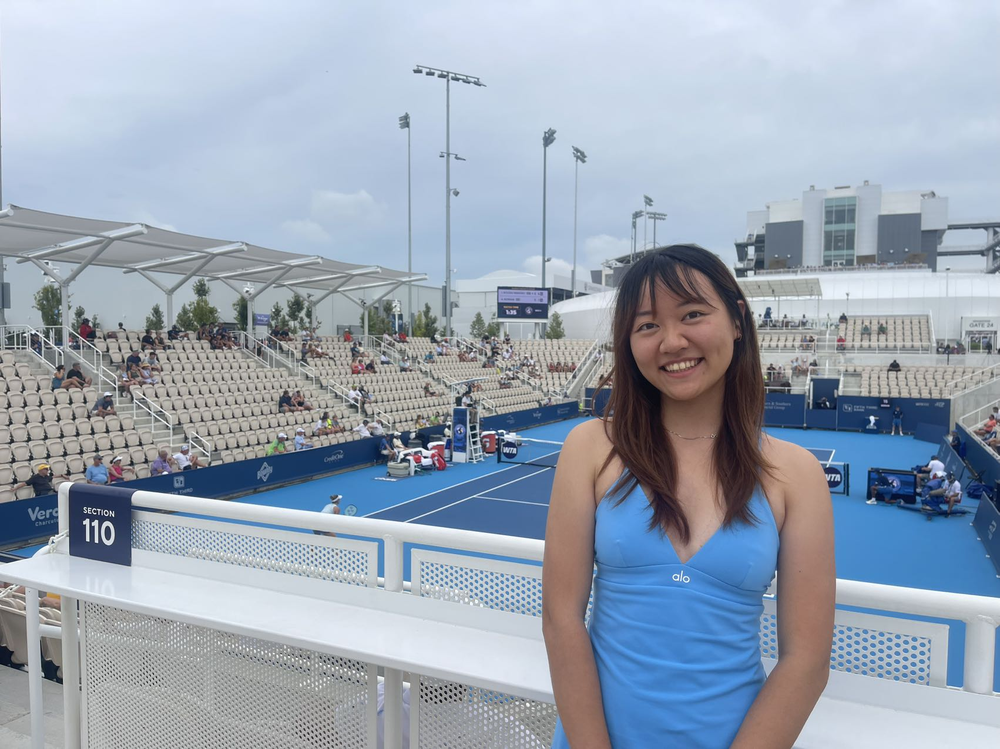
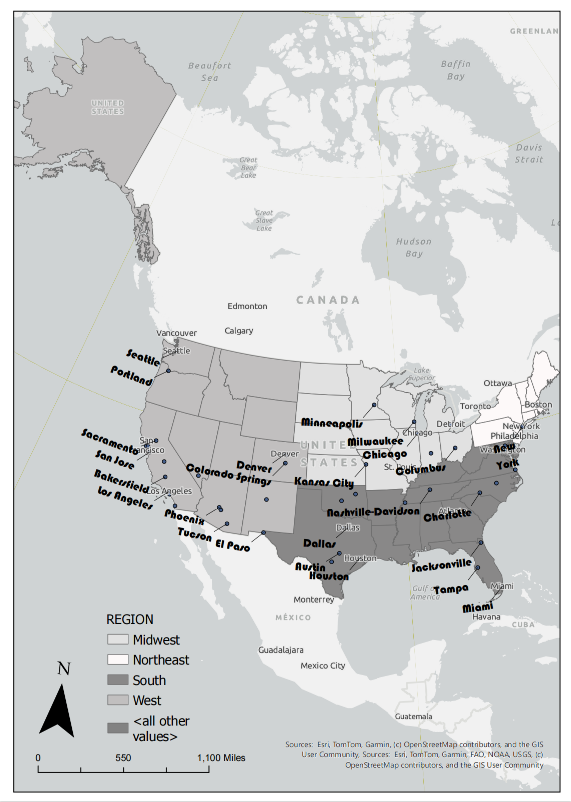
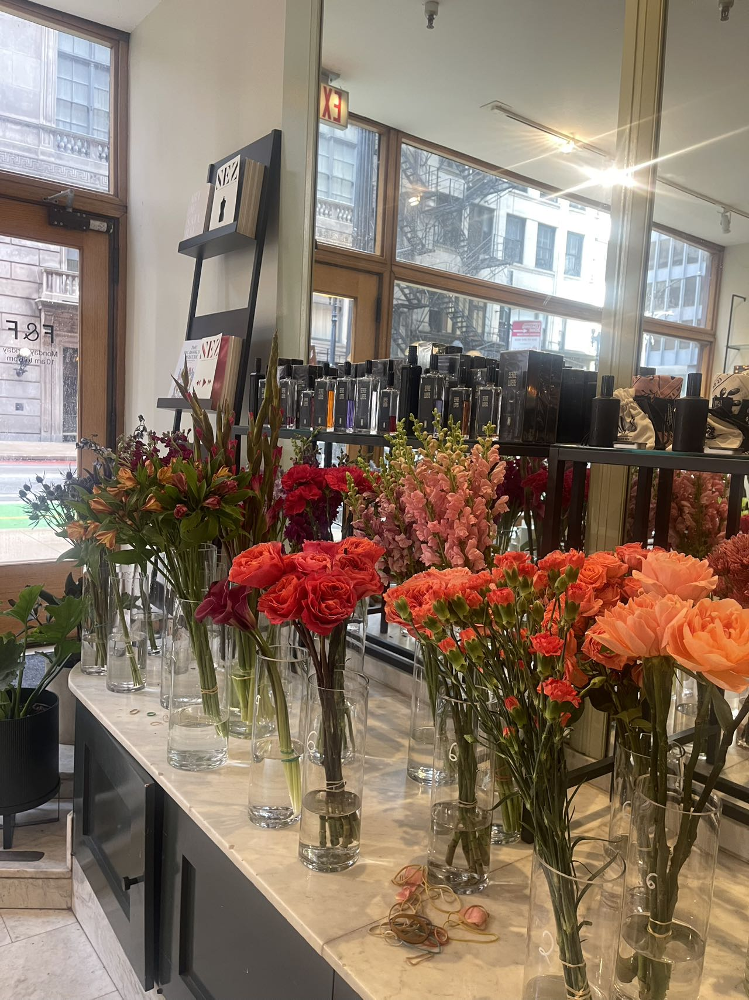
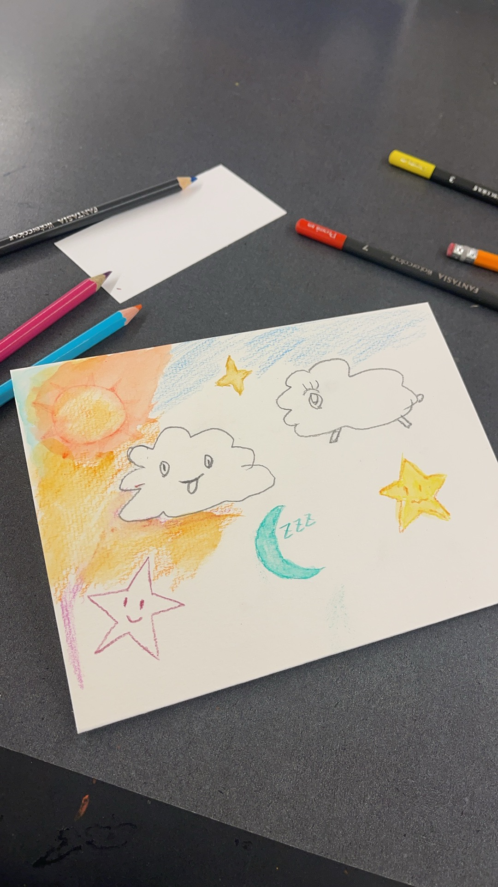
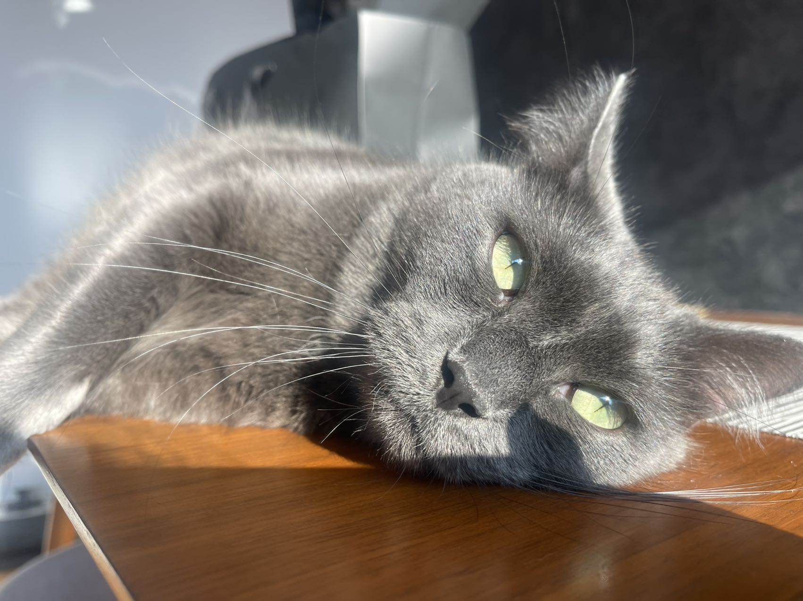

Geography & GIS · Statistics · UIUC
Hi, I'm Angela —
I map how place shapes the environment.
I am Angela (Meixian) Li, an undergraduate student in Geography & GIS and Statistics at the University of Illinois Urbana-Champaign, advised by Dr. Yue Lin in the Geospatial Computational Social Science Lab.
My research focuses on applying spatial, statistical, and computational methods to study geographic disparities in healthcare access and social justice. I'm especially curious about how the places people live shape their health. To study this, I use GIS, spatial statistics, and large-scale geospatial data to find where inequalities show up and why.
Outside of research, I enjoy 🎾 tennis, 📷 photography, 🍂 plants, and 📖 reading.
Research interests
- Health Geography
- Computational Social Science
- Spatial Statistics
📎 Bits of me
tennis, maps, sunsets & one very sleepy cat




place shapes everything ✶